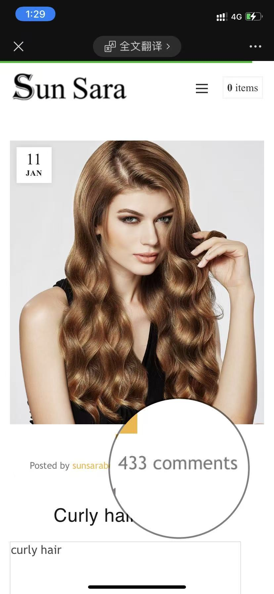

← Cases
Early B2B SEO
Earlier B2B SEO foundation for an overseas hair care website.
海外洗护 B2B 网站的早期 SEO 基础经验。
Worked on early-stage B2B SEO for English hair care websites, covering keyword research, TDK optimization, product page copy, English blog content, publishing workflow, and user-question mining.
参与海外洗护 B2B 官网的早期 SEO 工作，覆盖关键词研究、TDK 优化、产品页文案、英文博客内容、发布流程和用户问题沉淀。
+200%organic traffic自然流量
+20%CTR
50+/moorganic inquiries自然询盘
433blog comments博客评论
Strategy & Execution
策略与执行
- Built a 200+ industry keyword database.
- Optimized TDK, product pages, and English blog content.
- Created user-focused content based on overseas customer pain points.
- Built a basic content publishing SOP and used GA data to refine content direction.
- Wrote “Curly Hair Struggles,” which received 433 comments and helped improve community engagement and organic backlink growth.
- 建立 200+ 行业关键词库。
- 优化 TDK、产品页和英文博客内容。
- 围绕海外用户痛点撰写用户导向内容。
- 建立基础内容发布 SOP，并使用 GA 数据优化内容方向。
- 撰写《Curly Hair Struggles》，获得 433 条评论，提升社区互动和自然外链增长。

1 / 1